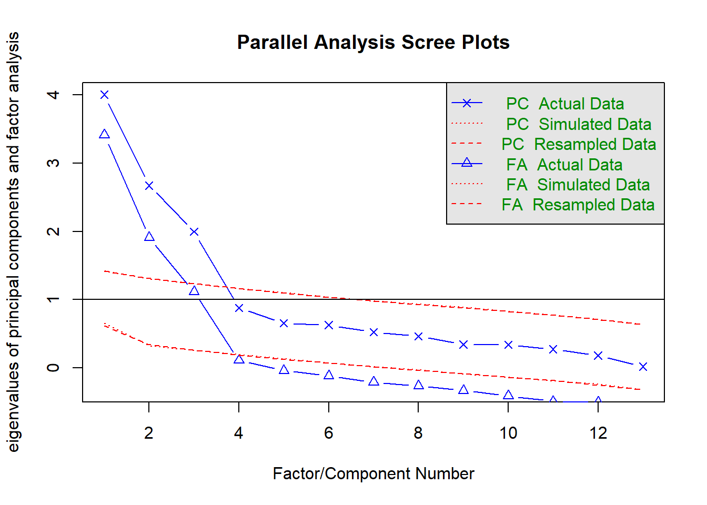
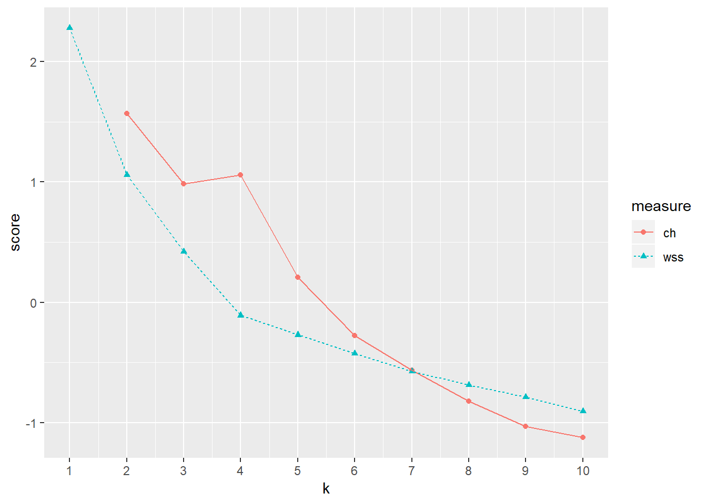
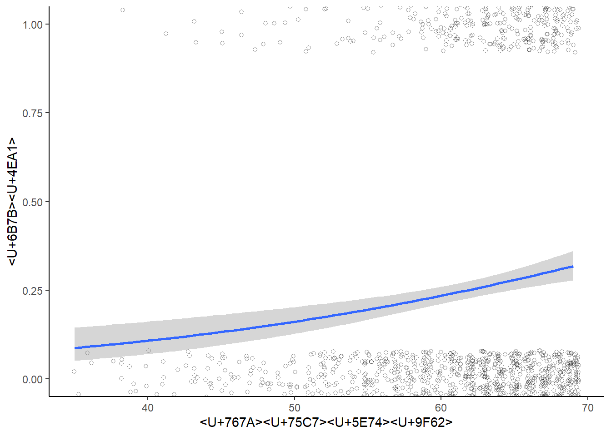

Memo
ここにメモを残していく（自分用）。
分析手法
階層的重回帰分析
階層的重回帰分析は、ステップ１からステップ２へとステップごとに関心のある変数を投入していき、分散説明率が統計的に有意に増加することを検定することで、その変数の重要性を分析する手法である。
たとえば、大事な人に会うときや人前で話をするとき、誰しも不安を感じやすい（状態不安という）。そのときの不安の程度は、協調性や誠実さといったパーソナリティ特性によることが考えられるが、研究として関心があるのはこれらの交互作用効果だとする（“誠実さが高く協調性が高い人は周囲に合わせようとするため、不安を感じやすい”とか）。その場合は、ステップ１では説明変数として“協調性”と“誠実さ”を入れ、ステップ２ではさらに“協調性”と“誠実さ”の交互作用項を入れて分析する。ただし、各変数と交互作用項の相関による多重共線性の問題が考えられるので中心化処理（平均値を引く）を忘れずに行う。
分析
Rで分析する場合には以下のコードを用いる。
data <- XXX #<U+5206><U+6790><U+3057><U+305F><U+3044><U+30C7><U+30FC><U+30BF><U+3092><U+5165><U+308C><U+308B>
y <- data$v1 #<U+5FDC><U+7B54><U+5909><U+6570>: <U+72B6><U+614B><U+4E0D><U+5B89>
x1 <- data$v2 - mean(data$v2) #<U+8AAC><U+660E><U+5909><U+6570>(<U+4E2D><U+5FC3><U+5316>): <U+5354><U+8ABF><U+6027>
x2 <- data$v3 - mean(data$v3) #<U+8AAC><U+660E><U+5909><U+6570>(<U+4E2D><U+5FC3><U+5316>): <U+8AA0><U+5B9F><U+3055>
c1 <- data$v4 - mean(data$v4) #<U+5171><U+5909><U+91CF>(<U+4E2D><U+5FC3><U+5316>): <U+795E><U+7D4C><U+75C7><U+50BE><U+5411>
# <U+7B2C>1<U+30B9><U+30C6><U+30C3><U+30D7>
step1 <- lm(y ~ x1 + x2 + c1)
summary(step1)
# <U+7B2C>2<U+30B9><U+30C6><U+30C3><U+30D7>
step2 <- lm(y ~ x1 + x2 + x1:x2 + c1)
summary(step2)
# <U+5E73><U+65B9><U+548C><U+306E><U+5909><U+5316><U+91CF><U+306E><U+691C><U+5B9A>
anova(step1, step2) 今回は、データセットとしてpsychパッケージに入っている“epi.bfi”を使用する。このデータセットにはアイゼンク性格検査（EPI）とBig 5尺度、ベック抑うつ性尺度、特性‐状態不安の得点が231人分入っている。
実際に分析を行う際には、説明変数の数や共変量の有無は適宜調整する。
library(psych)##
## Attaching package: 'psych'## The following objects are masked from 'package:ggplot2':
##
## %+%, alphadata <- epi.bfi #<U+5206><U+6790><U+3057><U+305F><U+3044><U+30C7><U+30FC><U+30BF><U+3092><U+5165><U+308C><U+308B>
y <- data$stateanx #<U+5FDC><U+7B54><U+5909><U+6570>: <U+72B6><U+614B><U+4E0D><U+5B89>
x1 <- data$bfcon - mean(data$bfcon) #<U+8AAC><U+660E><U+5909><U+6570>(<U+4E2D><U+5FC3><U+5316>): <U+5354><U+8ABF><U+6027>
x2 <- data$bfagree - mean(data$bfagree) #<U+8AAC><U+660E><U+5909><U+6570>(<U+4E2D><U+5FC3><U+5316>): <U+8AA0><U+5B9F><U+3055>
c1 <- data$bfneur - mean(data$bfneur) #<U+5171><U+5909><U+91CF>(<U+4E2D><U+5FC3><U+5316>): <U+795E><U+7D4C><U+75C7><U+50BE><U+5411>- 第1ステップ
step1 <- lm(y ~ x1 + x2 + c1)
summary(step1)##
## Call:
## lm(formula = y ~ x1 + x2 + c1)
##
## Residuals:
## Min 1Q Median 3Q Max
## -20.622 -6.996 -1.325 5.394 28.091
##
## Coefficients:
## Estimate Std. Error t value Pr(>|t|)
## (Intercept) 39.84848 0.64525 61.757 < 2e-16 ***
## x1 -0.05379 0.03318 -1.621 0.1064
## x2 -0.08006 0.04001 -2.001 0.0466 *
## c1 0.24162 0.02781 8.688 7.4e-16 ***
## ---
## Signif. codes: 0 '***' 0.001 '**' 0.01 '*' 0.05 '.' 0.1 ' ' 1
##
## Residual standard error: 9.807 on 227 degrees of freedom
## Multiple R-squared: 0.2803, Adjusted R-squared: 0.2708
## F-statistic: 29.47 on 3 and 227 DF, p-value: 3.963e-16- 第2ステップ
step2 <- lm(y ~ x1 + x2 + x1:x2 + c1)
summary(step2)##
## Call:
## lm(formula = y ~ x1 + x2 + x1:x2 + c1)
##
## Residuals:
## Min 1Q Median 3Q Max
## -20.660 -6.979 -1.415 5.140 28.356
##
## Coefficients:
## Estimate Std. Error t value Pr(>|t|)
## (Intercept) 39.330808 0.690941 56.924 < 2e-16 ***
## x1 -0.056617 0.032994 -1.716 0.0875 .
## x2 -0.083492 0.039784 -2.099 0.0370 *
## c1 0.234168 0.027875 8.401 4.94e-15 ***
## x1:x2 0.002911 0.001451 2.007 0.0460 *
## ---
## Signif. codes: 0 '***' 0.001 '**' 0.01 '*' 0.05 '.' 0.1 ' ' 1
##
## Residual standard error: 9.742 on 226 degrees of freedom
## Multiple R-squared: 0.2929, Adjusted R-squared: 0.2804
## F-statistic: 23.4 on 4 and 226 DF, p-value: 3.352e-16- 平方和の変化量の検定
anova(step1, step2)| Res.Df | RSS | Df | Sum of Sq | F | Pr(>F) |
|---|---|---|---|---|---|
| 227 | 21831.76 | NA | NA | NA | NA |
| 226 | 21449.49 | 1 | 382.2643 | 4.027681 | 0.0459507 |
結果の書き方の例
状態不安得点を応答変数とした階層的重回帰分析を行った。その結果、ステップ1（R2adj = .27, F (3,227) = 29.47, p < .05）から交互作用項を含んだステップ2（R2adj = .28, F (4,226) = 23.40, p < .05）で分散説明率の有意な増加が見られた（ΔR2 = .07, ΔF (1,226) = 4.03, p < .05）。誠実さ得点と協調性得点の交互作用効果が有意であった（b* = 0.002, t (226) = 2.01, p < .05）。誠実さ得点の主効果（b* = -0.06, t (226) = 1.72, ns.）は有意ではなかった。協調性得点の主効果が有意であった（b* = -0.08, t (226) = 2.10, p < .05）。共変量の神経症傾向得点の主効果が有意であった（b* = 0.23, t (226) = 8.40, p < .05）。
単純傾斜分析
交互作用効果が有意であった場合、下位検定として単純傾斜分析を行う。
コードは以下の通り。
# <U+4E0B><U+4F4D><U+691C><U+5B9A>
# x1<U+304C>+1SD<U+306E><U+5834><U+5408><U+306E>x2<U+306E><U+52B9><U+679C><U+3092><U+5206><U+6790>
x1high <- data$v2 - (mean(data$v2) + sd(data$v2))
simpleslope1 <- lm(y ~ x1high + x2 + x1high:x2 + c1)
summary(simpleslope1)
## x1<U+304C>-1SD<U+306E><U+5834><U+5408><U+306E>x2<U+306E><U+52B9><U+679C><U+3092><U+5206><U+6790>
x1low <- data$v2 - (mean(data$v2) - sd(data$v2))
simpleslope2 <- lm(y ~ x1low + x2 + x1low:x2 + c1)
summary(simpleslope2)
- x1が+1SDの場合のx2の効果を分析
x1high <- data$bfcon - (mean(data$bfcon) + sd(data$bfcon))
simpleslope1 <- lm(y ~ x1high + x2 + x1high:x2 + c1)
summary(simpleslope1)##
## Call:
## lm(formula = y ~ x1high + x2 + x1high:x2 + c1)
##
## Residuals:
## Min 1Q Median 3Q Max
## -20.660 -6.979 -1.415 5.140 28.356
##
## Coefficients:
## Estimate Std. Error t value Pr(>|t|)
## (Intercept) 38.092154 1.007153 37.822 < 2e-16 ***
## x1high -0.056617 0.032994 -1.716 0.0875 .
## x2 -0.019799 0.049815 -0.397 0.6914
## c1 0.234168 0.027875 8.401 4.94e-15 ***
## x1high:x2 0.002911 0.001451 2.007 0.0460 *
## ---
## Signif. codes: 0 '***' 0.001 '**' 0.01 '*' 0.05 '.' 0.1 ' ' 1
##
## Residual standard error: 9.742 on 226 degrees of freedom
## Multiple R-squared: 0.2929, Adjusted R-squared: 0.2804
## F-statistic: 23.4 on 4 and 226 DF, p-value: 3.352e-16- x1が-1SDの場合のx2の効果を分析
x1low <- data$bfcon - (mean(data$bfcon) - sd(data$bfcon))
simpleslope2 <- lm(y ~ x1low + x2 + x1low:x2 + c1)
summary(simpleslope2)##
## Call:
## lm(formula = y ~ x1low + x2 + x1low:x2 + c1)
##
## Residuals:
## Min 1Q Median 3Q Max
## -20.660 -6.979 -1.415 5.140 28.356
##
## Coefficients:
## Estimate Std. Error t value Pr(>|t|)
## (Intercept) 40.569461 0.991228 40.929 < 2e-16 ***
## x1low -0.056617 0.032994 -1.716 0.08754 .
## x2 -0.147186 0.051948 -2.833 0.00502 **
## c1 0.234168 0.027875 8.401 4.94e-15 ***
## x1low:x2 0.002911 0.001451 2.007 0.04595 *
## ---
## Signif. codes: 0 '***' 0.001 '**' 0.01 '*' 0.05 '.' 0.1 ' ' 1
##
## Residual standard error: 9.742 on 226 degrees of freedom
## Multiple R-squared: 0.2929, Adjusted R-squared: 0.2804
## F-statistic: 23.4 on 4 and 226 DF, p-value: 3.352e-16結果の書き方の例
誠実さ得点と協調性得点の交互作用効果が有意であったため、下位検定として単純傾斜分析を行った。その結果、誠実さ得点を-1SDとした場合、協調性得点の負の効果が確認された（b* = -0.15, t (226) = 2.833, p < .05）。誠実さ得点を+1SDとした場合、協調性得点の有意な効果は認められなかった（b* = -0.02, t (226) = 0.40, ns.）。
あらら、なんだか変な結果に・・・
探索的因子分析
科学において測定は重要である。心理学においては、目に見えない心の働きを研究するうえで様々な質問項目が利用されてきており、それがお家芸にもなっている。複数からなる質問項目がいったいどのような概念を表しているのかは関心の高いところであるが、探索的因子分析は項目への回答に影響した因子の存在を統計的に抽出する手法である。
Rで分析する場合には以下のコードを用いる。
data <- XXX #<U+5206><U+6790><U+3057><U+305F><U+3044><U+30C7><U+30FC><U+30BF><U+3092><U+5165><U+308C><U+308B>
library(psych) #psych<U+30D1><U+30C3><U+30B1><U+30FC><U+30B8><U+3092><U+4F7F><U+3046>
# <U+56E0><U+5B50><U+6570><U+306E><U+6C7A><U+5B9A>
va <- data.frame(data$Q1, data$Q2, data$Q3, data$Q4, data$Q5, data$Q6, data$Q7, data$Q8,
data$Q9, data$Q10, data$Q11) #<U+56E0><U+5B50><U+5206><U+6790><U+306B><U+304B><U+3051><U+308B><U+5909><U+6570><U+3092><U+53D6><U+308A><U+51FA><U+3059>
fa.parallel(va) #<U+63A8><U+5B9A><U+3055><U+308C><U+308B><U+6700><U+5927><U+306E><U+56E0><U+5B50><U+6570>(<U+5E73><U+884C><U+5206><U+6790>)
VSS(va, plot = FALSE) #<U+63A8><U+5B9A><U+3055><U+308C><U+308B><U+6700><U+5C0F><U+306E><U+56E0><U+5B50><U+6570>(<U+6700><U+5C0F><U+5E73><U+5747><U+504F><U+76F8><U+95A2>)
# <U+63A2><U+7D22><U+7684><U+56E0><U+5B50><U+5206><U+6790>
fa.result <- fa(va, nfactors = 4, fm = "minres", rotate = "promax") #<U+305F><U+3068><U+3048><U+3070><U+56E0><U+5B50><U+6570><U+3092>4<U+3068><U+3057><U+3066><U+3001><U+6700><U+5C0F><U+4E8C><U+4E57><U+6CD5><U+306E><U+30D7><U+30ED><U+30DE><U+30C3><U+30AF><U+30B9><U+3001><U+3069><U+30FC><U+3093>!
print(fa.result, sort = T, digit = 3, cut = 0.3) #<U+7D50><U+679C><U+306E><U+8868><U+793A><U+3002><U+30BD><U+30FC><U+30C8><U+304B><U+3051><U+3066><U+3001><U+6841><U+6570><U+306F>3<U+3001>0.3<U+4EE5><U+4E0B><U+306E><U+7D50><U+679C><U+306F><U+30AB><U+30C3><U+30C8> 上のコードでは、回転法はプロマックス回転、初期解の算出には最小二乗法を用いている。
回転法（rotate=）については直交回転と斜交回転を選択できる。直交回転なら“varimax”、斜交回転なら“promax”が使えるが、その他の回転法も直交回転と斜交回転のそれぞれ用意されている。
初期解の算出（fm=）には、最小二乗法なら“minres”、最尤法なら“ml”、主因子法なら“pa”が使える。他にもあり。
因子数の選定
因子分析をするにあたってはまず因子数の選定が必要になってくる。基本的には理論的な説明が可能であることが大切だろうが、統計的な算出方法もある。有名なのはスクリープロットでかくんとなってるところを基準に見るやつ。
その他、平行分析と最小平均偏相関という手法がある（どちらもpsychoパッケージに入ってる）。数学的なことはわからないけど、平行分析は因子数として選定され得る数を大きめに出す。一方、最小平均偏相関は因子数を倹約的に推定する。そのため、因子数はだいたい最小平均偏相関の値から平行分析の値までの間で分析していって、理論的な説明や因子分析のモデル適合度を見ながら最終的な因子数を決めるのが良さそう。
データセットとしてpsychパッケージに入っている“epi.bfi”を使用する。このデータセットにはアイゼンク性格検査（EPI）とBig 5尺度、ベック抑うつ性尺度、特性‐状態不安の得点が231人分入っている。
library(psych) #psych<U+30D1><U+30C3><U+30B1><U+30FC><U+30B8><U+3092><U+4F7F><U+3046>
va <- epi.bfi #<U+56E0><U+5B50><U+5206><U+6790><U+306B><U+304B><U+3051><U+308B><U+5909><U+6570><U+3092><U+53D6><U+308A><U+51FA><U+3059><U+3002><U+3053><U+3053><U+3067><U+306F><U+3059><U+3079><U+3066><U+306E><U+5909><U+6570><U+3092><U+4F7F><U+3046><U+3002>- 平行分析
fa.parallel(va) #<U+63A8><U+5B9A><U+3055><U+308C><U+308B><U+6700><U+5927><U+306E><U+56E0><U+5B50><U+6570>(<U+5E73><U+884C><U+5206><U+6790>)
## Parallel analysis suggests that the number of factors = 3 and the number of components = 3- 最小平均偏相関
“The Velicer MAP achieves a minimum of 0.05 with…”のところのfactorsを見る。
VSS(va, plot = FALSE) #<U+63A8><U+5B9A><U+3055><U+308C><U+308B><U+6700><U+5C0F><U+306E><U+56E0><U+5B50><U+6570>(<U+6700><U+5C0F><U+5E73><U+5747><U+504F><U+76F8><U+95A2>)##
## Very Simple Structure
## Call: vss(x = x, n = n, rotate = rotate, diagonal = diagonal, fm = fm,
## n.obs = n.obs, plot = plot, title = title, use = use, cor = cor)
## VSS complexity 1 achieves a maximimum of 0.73 with 3 factors
## VSS complexity 2 achieves a maximimum of 0.86 with 3 factors
##
## The Velicer MAP achieves a minimum of 0.05 with 3 factors
## BIC achieves a minimum of -22.79 with 6 factors
## Sample Size adjusted BIC achieves a minimum of -3.74 with 8 factors
##
## Statistics by number of factors
## vss1 vss2 map dof chisq prob sqresid fit RMSEA BIC SABIC complex
## 1 0.53 0.00 0.098 65 1253.38 2.0e-219 14.0 0.53 0.286 900 1105.6 1.0
## 2 0.70 0.76 0.076 53 704.54 1.2e-114 7.0 0.76 0.235 416 584.1 1.1
## 3 0.73 0.86 0.050 42 354.38 4.8e-51 3.1 0.90 0.183 126 258.9 1.3
## 4 0.71 0.86 0.065 32 262.74 4.6e-38 2.5 0.92 0.181 89 190.0 1.5
## 5 0.65 0.84 0.088 23 142.11 3.8e-19 2.1 0.93 0.153 17 89.8 1.7
## 6 0.63 0.85 0.116 15 58.85 4.0e-07 1.8 0.94 0.116 -23 24.8 1.7
## 7 0.66 0.83 0.147 8 21.71 5.5e-03 1.7 0.94 0.089 -22 3.5 1.8
## 8 0.65 0.81 0.218 2 0.81 6.7e-01 1.3 0.96 0.000 -10 -3.7 1.7
## eChisq SRMR eCRMS eBIC
## 1 1.5e+03 0.20267 0.222 1126
## 2 4.9e+02 0.11719 0.142 206
## 3 5.6e+01 0.03932 0.054 -173
## 4 2.8e+01 0.02811 0.044 -146
## 5 1.4e+01 0.01940 0.036 -112
## 6 3.3e+00 0.00952 0.022 -78
## 7 7.7e-01 0.00461 0.014 -43
## 8 1.5e-02 0.00065 0.004 -11探索的因子分析
因子数は３因子が良さそう。
fa.result <- fa(va, nfactors = 3, fm = "minres", rotate = "promax") #<U+56E0><U+5B50><U+6570><U+3092>3<U+3068><U+3057><U+3066><U+3001><U+6700><U+5C0F><U+4E8C><U+4E57><U+6CD5><U+306E><U+30D7><U+30ED><U+30DE><U+30C3><U+30AF><U+30B9><U+3001><U+3069><U+30FC><U+3093>!
print(fa.result, sort = T, digit = 3, cut = 0.3) #<U+7D50><U+679C><U+306E><U+8868><U+793A><U+3002><U+30BD><U+30FC><U+30C8><U+304B><U+3051><U+3066><U+3001><U+6841><U+6570><U+306F>3<U+3001>0.3<U+4EE5><U+4E0B><U+306E><U+7D50><U+679C><U+306F><U+30AB><U+30C3><U+30C8>## Factor Analysis using method = minres
## Call: fa(r = va, nfactors = 3, rotate = "promax", fm = "minres")
##
## Warning: A Heywood case was detected.
## Standardized loadings (pattern matrix) based upon correlation matrix
## item MR1 MR2 MR3 h2 u2 com
## epiNeur 5 0.828 0.663 0.3371 1.05
## traitanx 12 0.825 0.821 0.1793 1.15
## bfneur 9 0.821 0.334 0.643 0.3566 1.33
## bdi 11 0.718 0.534 0.4663 1.01
## stateanx 13 0.662 0.451 0.5487 1.01
## epilie 4 0.187 0.8125 2.39
## epiE 1 1.015 1.050 -0.0497 1.02
## epiImp 3 0.757 0.568 0.4319 1.07
## epiS 2 0.702 0.584 0.4165 1.20
## bfagree 6 0.646 0.449 0.5512 1.03
## bfopen 10 0.642 0.404 0.5963 1.23
## bfcon 7 0.639 0.464 0.5359 1.35
## bfext 8 0.481 0.613 0.685 0.3155 1.90
##
## MR1 MR2 MR3
## SS loadings 3.127 2.541 1.834
## Proportion Var 0.241 0.195 0.141
## Cumulative Var 0.241 0.436 0.577
## Proportion Explained 0.417 0.339 0.244
## Cumulative Proportion 0.417 0.756 1.000
##
## With factor correlations of
## MR1 MR2 MR3
## MR1 1.000 -0.010 -0.257
## MR2 -0.010 1.000 0.117
## MR3 -0.257 0.117 1.000
##
## Mean item complexity = 1.3
## Test of the hypothesis that 3 factors are sufficient.
##
## The degrees of freedom for the null model are 78 and the objective function was 8.247 with Chi Square of 1854.125
## The degrees of freedom for the model are 42 and the objective function was 1.59
##
## The root mean square of the residuals (RMSR) is 0.039
## The df corrected root mean square of the residuals is 0.054
##
## The harmonic number of observations is 231 with the empirical chi square 55.713 with prob < 0.0764
## The total number of observations was 231 with Likelihood Chi Square = 354.378 with prob < 4.81e-51
##
## Tucker Lewis Index of factoring reliability = 0.6703
## RMSEA index = 0.1831 and the 90 % confidence intervals are 0.1628 0.1973
## BIC = 125.797
## Fit based upon off diagonal values = 0.985クラスタ分析
以下のコードを使う。
clust <- XXX #<U+5206><U+6790><U+3057><U+305F><U+3044><U+30C7><U+30FC><U+30BF><U+3092><U+5165><U+308C><U+308B>
# <U+8DDD><U+96E2><U+306E><U+8A08><U+7B97>
uclust <- dist(clust)^2 #<U+30E6><U+30FC><U+30AF><U+30EA><U+30C3><U+30C9><U+8DDD><U+96E2><U+306E><U+5E73><U+65B9>
result <- hclust(uclust, method = "ward.D2") #Ward<U+6CD5>
groups <- cutree(result, k = 4) #<U+30AF><U+30E9><U+30B9><U+30BF><U+6570><U+3092>4<U+3064><U+3068><U+3059><U+308B>
groups <- factor(groups)
# <U+30AF><U+30E9><U+30B9><U+30BF><U+306B><U+540D><U+524D><U+3092><U+4ED8><U+3051><U+308B>
levels(groups)[1] <- "Group1"
levels(groups)[2] <- "Group2"
levels(groups)[3] <- "Group3"
levels(groups)[3] <- "Group4"
table(groups)
clust$groups <- groups
aggregate(. ~ groups, data = clust, FUN = mean)クラスタ数の分析
クラスタ数を選定する方法として、The Calinski-Harabasz indexがある。
クラスター数ごとに、クラスタ内の距離の2乗の合計値（within sum of squares; WSS）を算出し、その曲線のエルボーを探す。クラスタ数が増加すると、total WSSが減少するのだが、理想的なクラスター数を超えるとWSSの減少割合が落ちるという見込みからエルボー探しをする。
また、Calinski-Harabasz基準とは、WSSに対するクラスター間の分散（データセットの重心からすべてのクラスターの重心の分散）の割合である。
library(psych)
clust<-epi.bfi[,6:10]
エルボー…４…かな？
クラスタ分析
# <U+8DDD><U+96E2><U+306E><U+8A08><U+7B97>
uclust <- dist(clust)^2 #<U+30E6><U+30FC><U+30AF><U+30EA><U+30C3><U+30C9><U+8DDD><U+96E2><U+306E><U+5E73><U+65B9>
result <- hclust(uclust, method = "ward.D2") #Ward<U+6CD5>
groups <- cutree(result, k = 4) #<U+30AF><U+30E9><U+30B9><U+30BF><U+6570><U+3092>4<U+3064><U+3068><U+3059><U+308B>
groups <- factor(groups)
# <U+30AF><U+30E9><U+30B9><U+30BF><U+306B><U+540D><U+524D><U+3092><U+4ED8><U+3051><U+308B>
levels(groups)[1] <- "Group1"
levels(groups)[2] <- "Group2"
levels(groups)[3] <- "Group3"
levels(groups)[4] <- "Group4"
table(groups)## groups
## Group1 Group2 Group3 Group4
## 71 67 35 58clust$groups <- groups
per <- aggregate(. ~ groups, data = clust, FUN = mean)
per| groups | bfagree | bfcon | bfext | bfneur | bfopen |
|---|---|---|---|---|---|
| Group1 | 126.1408 | 116.29577 | 106.46479 | 62.95775 | 120.0986 |
| Group2 | 115.0299 | 96.50746 | 99.85075 | 98.94030 | 123.6119 |
| Group3 | 114.2000 | 106.20000 | 62.88571 | 88.60000 | 101.1714 |
| Group4 | 141.6207 | 133.12069 | 123.32759 | 105.53448 | 140.7241 |
# <U+56F3><U+793A>
library(ggplot2)
library(reshape2)
meltd <- melt(per, id.vars = "groups", variable.names = "items", value.name = "per")
ggplot(meltd, aes(x = groups, y = per, fill = variable)) + geom_bar(stat = "identity",
position = "dodge", colour = "black", width = 0.6) + xlab("Personality") + ylab("score") +
scale_fill_grey(start = 0.1, end = 1) + scale_y_continuous(expand = c(0, 0)) +
theme_classic() + guides(fill = guide_legend(title = NULL)) + guides(fill = guide_legend(nrow = 7)) +
theme(legend.position = "right") + theme(legend.text = element_text(10))
ggplot
ロジスティック回帰分析のグラフ
なんかいい感じのグラフ描きたいなって思いますよね。
ローデータがぶわーってプロットされてて、回帰直線・曲線がシューン！なってるやつ。
下のコードを使います。
library(ggplot2)
ggplot(data, #データを入れる
aes(x=valiable1, y=as.numeric(categolical1)))+ #x軸とy軸の変数を決める
geom_point(position=position_jitter(width=0.4,height=0.08),
alpha=.4,shape=21,size=1.5)+
#ローデータをプロット。ただし、同じ箇所の点が重なってプロットされるので、散らす設定する
stat_smooth(method="glm",
method.args = list(family="binomial"(link="logit")))+
#ロジスティック曲線。ここはきちんと書かないとうまく表示されない。
xlab("X軸の名前")+ylab("Y軸の名前")+ #x軸とy軸の名前を決める
coord_cartesian(ylim=c(0,1))+ #y軸の最小と最大の値を決める
theme_classic() #クラシックなデザインが好き すると、このようなものができます。

なんか違うけど、データがそうならちゃんとS字になるはずなんだ・・・
軸の設定
- ggplotでグラフを作成すると、x軸から棒グラフなんかが浮いてしまう（ラピュタ）。ラピュタを無くすならscale_y_continuous(expand = c(0,0))を加える
- グラフの縦軸の指定は、たとえば０～１０にしたかったらcoord_cartesian(ylim=c(0,10))
Rmarkdown
yamlヘッダ
- Rmarkdownでドキュメントを作るときの全体設定
- 改行やスペースが重要になるので注意
たとえば・・・
---
title: "Memo"
output: html_document:
toc: true
toc_float: true
---これだとエラーが出るし・・・
---
title: "Memo"
output:
html_document:
toc: true
toc_float: true
---これだとtoc: true以下が反映されない。
---
title: "Memo"
output:
html_document: <- 改行
toc: true <- 半角2つスペースあける
toc_float: true
---これでよし。